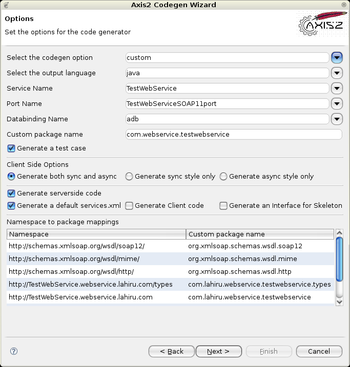

Update: The Code generator plugin for Eclipse is broken. The docs as well as the code are outdated. If interested in contributing a fix, see Jira issue AXIS2-5955.
This document explains the usage of this code generator plug-in for Eclipse. In other words, this document will guide you through the operations of generating a WSDL file from a Java class and/or generating a Java class file from a WSDL file.
Introduction
The Axis2 code generator comes built-in with an Eclipse plug-in. This plug-in can be used to generate a WSDL file from a java class (Java2WSDL) and/or a java class file from a WSDL (WSDL2Java). First you need to install the plug-in. The instructions for the installation process are given below.
Installation
Installation instructions for the plugin can be found here.
Operation
WSDL2Java
If the plug-in is properly installed you should see a new wizard under the "New" section.(use the File -> New -> Other or Ctrl + N )
Selecting the wizard and pressing the "Next" button will start the code generator wizard. Following is the first wizard page.
Page 1:
Selecting the "Generate Java source code from WSDL file" option and clicking "Next" leads to the following page.
WSDL2Java Page 2 :
To move on to the next page the WSDL file location must be given. The "Browse" button can be used to easily browse for a file rather than typing the whole path.
WSDL2Java Page 3 :
Once the WSDL file is selected, the next page will take you to the page from where codegen options are to be selected. By far this is the most important page in this wizard. This page determines the characteristics of the code being generated.
Novices need not worry about these options since the most common options are defaulted, but advanced users will find it very easy to turn the knobs using these options.
What advanced users can do is select custom from the select codegen options drop down list and then change/edit the fields that you need.

Once the options are selected, only the final step of the code generation is left which is the selection of the output file location.
WSDL2Java Page 4 :
Here you can select the output file path by typing or browsing using the "Browse" button. You have the option of browsing only eclipse workspace projects by selecting the "Add the source to a project on current eclipse workspace" radio button. Or else you have the option to save the codegen resutls to file system
Here also you have the option to add some value to the codegen results. If you have enabled the check box "Add Axis2 libraries to the codegen result project" then all other controls below will get enabled. What you can do is point the downloaded Axis2_HOME location via the "Browse" button. Then you can verify the availability of the Axis2 libs by clicking on the "Check Libs" button. If all goes well then you can add the axis 2 libs to the codegen results location. Another option is available to generate a jar file if the user needs to add the codegen results to a project as a compiled jar file to the selected locations lib directory.
When the output file location is selected, the "Finish" button will be enabled. Clicking the "Finish" button will generate the code and a message box will pop up acknowledging the success. Well Done! You've successfully completed Axis2 code generation.
Java2WSDL
Page 1:
For this operation you need to select the option which says "Generate a WSDL from a Java source file"
Then click the "Next" button which will lead to the next page below.
Java2WSDL Page 2:
In this page one needs to select the class to be exposed and the relevant jar files /classes to be loaded as the classpath. After the libraries have been set, the "Test Class Loading" button must be clicked in order to test whether the class is loadable. Unless the class loading is successful proceeding to the "Next" button will not be enabled.
Once the classloading is successful and "Next" button is clicked the page below will appear.
Java2WSDL Page 3:
This page allows the parameters to be modified by setting the options for the generator.
Java2WSDL Page 4:
Here you can select the output file path by typing or browsing using the "Browse" button. You have the option of browsing only Eclipse workspace projects by selecting the "Add the source to a project on current eclipse workspace" radio button . Or else you have the option to save the codegen resutls to file system. Once the output file location and the output WSDL file name is added you can click the "Finish" button to complete generation.
If a message box pops up acknowledging the success, then you've successfully completed the Java2WSDL code generation.
Appendix
- Eclipse reference - http://www.eclipse.org/
- Custom Ant Tasks - http://ant.apache.org/manual/develop.html